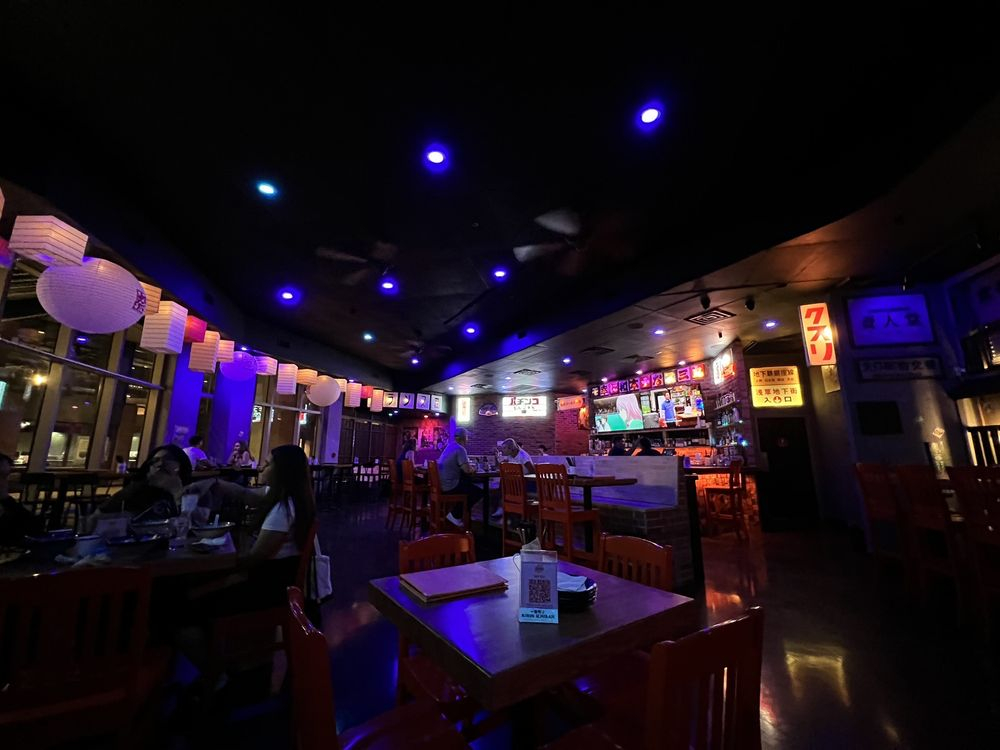

The Gems of Tempe

Matsuri Izakaya
A vibrant Japanese izakaya located in Tempe, Matsuri Izakaya offers a lively dining experience with a focus on small plates, sushi, and sake. The menu features a variety of traditional and contemporary dishes, perfect for sharing with friends. The energetic atmosphere and friendly staff make it a great spot for casual gatherings and celebrations. The anime playing from the tvs and the matcha ice cream are must-tries!
Casey Moore's Oyster House
A cozy and historic oyster house in Tempe, Casey Moore's offers a unique dining experience with a focus on fresh seafood and craft cocktails. The menu features a variety of oysters, seafood dishes, and Southern-inspired fare, making it a favorite spot for seafood lovers. The warm ambiance and attentive service create a welcoming environment for diners to enjoy their meals. The upstairs is rumored to be haunted, so if you find yourself there on the right day, you might be able to be allowed to explore it!
Otto's Pizza
A beloved pizzeria in Tempe, Otto's Pizza is known for its delicious thin-crust pizzas and casual atmosphere. Coming from France to Arizona in 1992, Otto has run this family buisness for 32 years now! The menu offers a variety of classic and specialty pizzas, as well as salads, calzones and appetizers. The friendly staff and laid-back vibe make it a popular spot for families and friends to gather for a tasty meal. Don't miss their signature pies, which are made with fresh ingredients and creative toppings. My personal favorite are the calzones!
Devil's Hideaway
A lively bar and restaurant in Tempe, Devil's Hideaway is known for its extensive selection of craft beers and delicious American cuisine. The menu features a variety of sandwhiches, pountine, and appetizers, perfect for pairing with their wide range of beers on tap. The vibrant atmosphere and friendly staff make it a great spot for socializing and enjoying a casual meal with friends. Their outdoor patio is a great place to hang out during the warmer months! There is also a hidden speakeasy through the back named Idle Hands, which has a great cocktail menu and is a must-visit for those looking for a unique experience.
Grounds on 2nd
A charming café located in downtown Tempe, Foch Cafe & Bistro is known for its cozy atmosphere and delicious breakfast and brunch options. The menu features a variety of dishes made with fresh, locally sourced ingredients, including avocado toast, breakfast burritos, and specialty coffee drinks. The inviting ambiance and friendly service make Foch Cafe & Bistro a popular spot for locals and visitors alike looking for a relaxing meal to start their day.